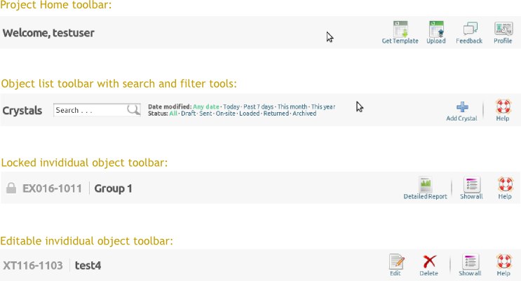

The MxLIVE user interface consists of three main regions, the contents of which depend on the type of object being managed, and the usage context. These regions are (from top to bottom):
- The navigation area
- This is the top most region of the browser page, which includes information about the current user, links for logging out of the system, and the navigation menu.

- The tool area
- This is the region just beneath the navigation area. The content of this region varies depending on the context. The left of this area usually displays a descriptive title about the context of the page, such as the name and identity of the crystal being inspected. The right of this area usually displays tool icons which permit you to carry out specific actions on the currenly displayed object. In some cases, extra tools are displayed in the middle region, such as search forms and list filters.
- The content area
- This is where the bulk of the content is displayed. The content will vary based on the type of object being managed. The content area itself is usually divided into the main region to the left and a side-bar region to the right.
The MxLIVE user interface makes use of three main concepts.
- The Dashboard
- The dashboard serves as the home page of the project. This is the page the user will be presented with after they login to the system. The dashboard, or project home, aggregates project-level functionality in one place. Here users are presented with an overview of their project, recent activity and general help and guides. They can also edit their profile, send feedback about the MxLIVE to staff, upload shipments from spreadsheets and use the navigation area to access any of the other entities they will like to manage.
- Object Lists
- An object list is a table of entries of a specific object type available within MxLIVE. The object list enables users to view all entries in table format, search through them, sort and order them based on different fields (or columns) and filter them based on status, or other properties such as modification date. It is also possible to add new entries from the object list page. The actual table is diplayed in the main region of the content area, while recent activity for the specific object type in question is displayed in the sidebar region. If more entries are available than can be displayed on a single page, the table will be paginated. The search, filter and add tools are available in the tool area.
- Object Entries
- An object entry is a page which presents detailed information about a single entry of a specific entity and its associations.
{kind=link}
{kind=link}